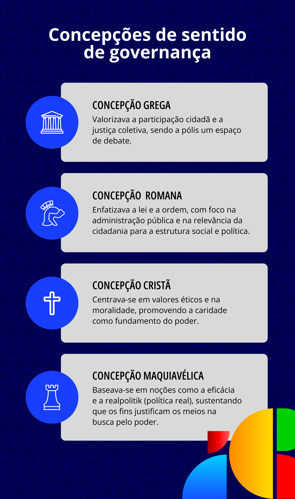

Democracia e Rede Federal
Ao apontarmos a historicidade da noção de democracia, sinalizamos a importância de a compreendermos dentro de um determinado espaço e tempo, visto que, tanto na antiguidade grega como na modernidade – o ápice da expressão racional –, o regime democrático não permitiu participação ampla de todas as pessoas com o mesmo protagonismo e reconhecimento. Pontuamos isso para inferir que a gestão democrática na EPT não pode assentar sua práxis numa visão de que existe uma ordem classificatória de direitos e reconhecimentos para uns e não para outros, pois essa é uma visão que nós, enquanto instituição, nos propomos a combater e não a perpetuar. A marca central da Rede Federal, por exemplo, é a inclusão e a formação omnilateral e não dual.
Notamos que, no pensamento moderno, a ideia de natureza é muito evidente, muito embora, em termos democráticos, a discussão política se dá em relação à necessidade do surgimento do Estado moderno como substituição ao antigo regime, e o deslocamento do poder de uma institucionalidade para outra. A intencionalidade em relação ao povo, ou a participação de todos o tempo todo, não foi (e talvez ainda não seja) uma convicção que encontra base na realidade. Trocar o rei e o papa pelo Estado como referência de poder decisório, em si, não significa grande mudança em termos de fomento à participação de todos em tudo. O mesmo para quando a burguesia suprimiu a monarquia ou o poderio simbólico da Igreja Católica. Em si, o fato de a burguesia assumir o protagonismo do poder político representa um grande progresso, mas não foi (e não é) a solução, uma vez que as pautas prioritárias apenas mudaram de uma autocracia para uma oligarquia, ocorrendo um processo de elitização – quando o ideal de democracia é algo bem mais amplo.
As pessoas podem começar a repensar a democracia fundamentalmente em razão da crescente influência do mundo exterior às fronteiras nacionais. Uma vez, comunidades de língua holandesa do sul da África pensaram estar criando sua própria democracia ao se afastarem dos britânicos, e não viram necessidade de incluir africanos de pele escura. Democracia para nós, mas não necessariamente para eles [os outros], tem sido [uma característica] central à ideia de democracia, desde Atenas. A realidade global do século 21, porém, está tornando ‘democracia para nós mas não para eles’ algo difícil de conceber. Isto nos impele a questionar o que poderia significar um mundo mais democrático
De certo modo, a suposta evolução, em termos políticos, da compreensão grega antiga de democracia à compreensão moderna e contemporânea de democracia não traz, por si só, uma visão de participação popular efetiva. Por exemplo, se o poder do rei, e mesmo do papa, sempre foi sustentado e justificado pelo direito sucessório – cuja concepção ampara-se na ideia de natureza aos moldes da visão platônica (inatismo) –, então problematizar a gestão democrática na EPT é contraposição tácita ao hegemônico e ao naturalmente estabelecido. Veja as diferenças da democracia antiga e da democracia contemporânea:
Título: Democracia na Grécia antiga e democracia liberal
Fonte: Prosa (2024i).
É urgente pensarmos as relações de trabalho numa perspectiva da formação politécnica e de uma gradativa inserção do trabalho como princípio educativo, para que possamos construir em nossos servidores e em nossos discentes a convicção de que a formação que oferecemos deve implicar todos na dialética de compreensão, explicação e transformação do mundo do trabalho.
Nossas ações e estratégias precisam irromper com as amarras conceituais que sedimentam a teoria do alfinete de Adam Smith, filósofo e economista escocês que, em A riqueza das nações (2023), apresenta a produção em série como o sentido maior do trabalho, desconsiderando o conhecimento politécnico (a produção em todos os seus aspectos e sentidos). Tal ideia desvaloriza o trabalhador e prioriza o lucro e o acúmulo de capital. O autor, desse modo, faz dois movimentos: um que retoma o sentido do trabalho como produtor da riqueza de uma nação, e outro que sugere que cada trabalhador produza uma parte do alfinete, e não o alfinete todo – essa é a base da teoria fordista de produção em série. O que verificamos em Smith é a aplicação dos princípios cartesianos à concepção de gestão, impedindo na prática a construção do que chamamos de politecnia, já que quem produz não entende o sentido e o papel do que está fazendo, e nem a relação do seu fazer com o todo da produção. Isso gera alienação, exploração e desconstituição gradativa do trabalhador, assim como Charles Chaplin apresenta no filme Tempos Modernos.
Isso porque, na produção fordista, não se trata apenas do trabalhador não conhecer o todo: ele é estimulado a especializar-se na parte. Não se trata de gestão como mediação dos processos, mas como estratégia de instrumentalização do humano em virtude da acriticidade e da mais valia.
O criador da Ciência Política, , em O Príncipe (2013), quebra com todos os protocolos da filosofia política, uma vez que prioriza em sua lente teórica o poder como fundamento de toda lógica política, e não mais como forma de justificar o Estado como necessidade. Ele critica o modelo romano, segundo o qual um imperador, para governar, precisa ser amado, e critica o modelo grego, que defendia que, para exercer uma função política, um governante deveria considerar a premissa da ética. Ainda, afasta-se da compreensão cristã, que na idade média tentou afirmar o poder político do papa pelo viés da acepção de sagrado, como se fosse uma escolha divina.
Para Maquiavel, o sentido da governança, o fim último de toda e qualquer ação, deve ser única e exclusivamente a manutenção do poder como um fim em si mesmo. Em vista disso, basta então que o governante seja temido: não precisa ser ético (sentido grego), não precisa ser amado (sentido romano) e muito menos ter vínculo direto com o sagrado (sentido cristão). Uma gestão maquiavélica em EPT fomenta inadvertidamente uma adesão ao sentido ideológico e alienado, hegemônico, ao modelo antidialético e escravocrata de exercício do poder.
Veja um resumo de todas as concepções de governança mencionadas acima:

Título: Concepções de sentido de governança
Fonte: Prosa (2024k).
Por meio dessa mirada seriam vistos trabalhadores sem autonomia e impotentes, negados em sua liberdade como decurso da rudeza e dos ultrajes interpostos pelo sistema produtivo. Com isso, soaria incompreensível e incongruente o apelo por iniciativa, automotivação, sensibilidade, criatividade, polivalência e inovação lhes dirigido pelas narrativas sobre as mudanças no mundo do trabalho, que se querem promissoras. Essa invocação soaria como uma ordem aos trabalhadores para que aumentem sua lealdade ao capital, sua autodisciplina e autocontrole para seu sucesso profissional e a defesa competitiva do seu lugar no mercado de trabalho. Como parte desse processo, as novas formas precarizadas de trabalho via plataformas não estão imunes desse ingrediente ideológico
Isso ilustra que, na gestão da Educação Profissional, a perspectiva democrática não se resume a votar e ser votado, ela vai muito além da organização de um grupo para impor suas convicções sobre os demais, aos moldes do que Maquiavel sugeriu. A gestão democrática na EPT não pode ser oligárquica e também não pode ser maquiavélica, pois o mais importante é o propósito: o fim último da existência da EPT, e não um projeto de poder de uma ou mais pessoas.
O pretexto de Maquiavel do poder como um fim em si mesmo preocupa-se apenas em se perpetuar no poder usando preferencialmente a lógica da força – o que normalmente acaba incidindo no que Aristóteles denominou como oligarquia. Nessa lógica, os cenários de gestão são constantemente ocupados e estão expressos tanto na tentativa de imposição da vontade individual sobre o coletivo como no exercício dos cargos de gestão como forma estratégica de projeto de perpetuação de poder, e não de serviço aos que mais precisam ou ao propósito último de uma instituição.
No entanto, não podemos esquecer que, na EPT, somos trabalhadores formando trabalhadores, e os desafios em torno da profissionalização e da postura crítica e criativa diante das imposições do capital exigem um olhar vigilante de quem faz gestão. Isso significa construir pontes e estratégias que capacitem, fomentem e consolidem os meios e formas de democratização nas relações com o conhecimento, nas relações interpessoais e na produção do saber científico e tecnológico como estratégia de emancipação, e não como subordinação.
Contudo, desafiando essas possibilidades, eis que os trabalhadores se defrontam, atualmente, com o enorme avanço da automatização do trabalho e com o sentimento de inutilidade e da falta de qualificação pessoal. Isso como um fato acachapante, consolidado e reforçado pelo sucesso dos algoritmos e inteligência artificial no aumento da produtividade, na economia de tempo e nas comodidades ordinárias que trazem
Democracia é e será sempre uma ponte em construção para o fortalecimento da justiça social, da paz e do reconhecimento da dignidade humana. Não pode ser reduzida à potência de sufrágio (capacidade de podermos votar ou sermos votados), mas deve ser compreendida como um processo contínuo de lapidação dos arranjos de poder. Assim, uma instituição pode transformar o conhecimento em potencialidade de ampliação das liberdades individuais e fomentar a participação ampla, crítica e irrestrita. Nesse sentido, todos os temas, componentes curriculares, setores e serviços das unidades da Rede Federal precisam compreender, explicar e transformar os contextos à luz da convicção de que somos resistência contra-hegemônica. Somos um espaço de produção de saberes e fazeres que promovam em todos o despertar para a importância da participação livre e crítica em todas as decisões que afetam as individualidades e a coletividade.
Glossário Etimológico e Epistemológico
Theoria (grego): ver além do que se vê, ver intelectualmente - (ideín, grego = ideia).
Práxis (sentido epistêmico): Aplicação e implicação de uma teoria (transformar uma ideia em realidade, ou produzir o conhecimento do conhecimento = sabedoria).
Prática: Ato em si, não é a mesma coisa que ação (sentido político – Aristóteles e Hannah Arendt) nem práxis. É o simples ato de um fazer em si, que pode ser refletido ou não.
Prática Educativa: Possui um foco muito forte na definição de Práxis, com relação direta com a Ensinagem, processo de ensinar algo – independentemente se for em espaço formal de sala de aula ou não.
Prática Pedagógica: Possui relação estreita com a dimensão mais teórica com ênfase na aprendizagem, em espaço formal de ensino. Prática pedagógica está sempre ligada a uma teoria de aprendizagem ou na pretensão de uma aplicação prática de algum entendimento sobre aprendizagem.
Estratégia/Abordagem Pedagógica: Possui foco na aprendizagem dos sujeitos (ligada à práxis).
Estratégia/Abordagem metodológica: Possui foco no Ensino (ligada à teoria).
Método: Campo da práxis. Método (metá, grego = através, pelo qual, para além + odós = caminho, trilha, estrada).
Metodologia: caminho para executar um projeto, passos, ordenamento, serve para estabelecer e executar conforme prioridades (campo da teoria).
Ex.: os gregos olhavam para o universo e viam a beleza e harmonia do universo (kósmos/kosméo). Em vez de guerras, resolveram aplicar a beleza e a harmonia do universo às relações sociais (pólis – inventaram a política).
- A ideia de perfeição e de beleza do universo – Theoria (ideia);
- A criação da política como modo de relação entre os humanos é a práxis (aplicação da ideia de perfeição e de beleza tirada da ideia de kósmos/kósmeo).
Para saber mais, as seguintes leituras são sugeridas:
- Política, de Aristóteles;
- Ética a Nicômacos, de Aristóteles;
- Sem Fins Lucrativos: Por que a democracia precisa das humanidades, de Martha Nussbaum;
- A condição Humana, de Hannah Arendt;
- Origens do Totalitarismo, de Hannah Arendt;
- A Teoria da Ação Comunicativa, de Jürgen Habermas.